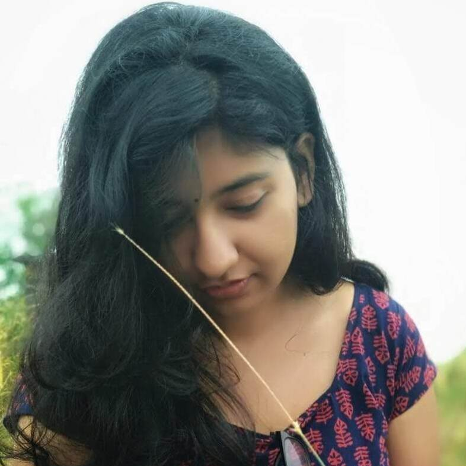

MEENAKSHI MURALIDHARAN
Coding | Photography | Speedcubing | Carnatic Music
ALOHA!

I am an enthusiastic B.Tech undergraduate specializing in Applied
Electronics and Instrumentation with ample managerial, coding and
rhetorical skill hailing from Kerala, India. I did my schooling in
Kendriya Vidyalaya and I am currently pursuing my graduation in Applied
Electronics and Instrumentation from College of Engineering Trivandrum.
Coding

My passion for coding inculcated during sophomore year of college. I
have a deep affinity for Data Structures and Algorithms and like to
solve problems in Coding platforms like Hackerrank and Leetcode. I am
also delving into the world of Web Development.
Skill set
C++
HTML5
CSS3
PYTHON
JAVA
Photography
My humble journey to the world of photography began through my
Smartphone. I love macro shots with great detailing and dynamic range. I
am also fascinated by light photography mainly light graffiti. I have
been able to capture some cool light graffiti and light trail shots. In
the future, I wish to own a DSLR and take amazing photographs. Do check
out some of my snaps in my Instagram handle :).
Speedcubing
I was introduced to competitive speedcubing by my best friend and later
it became my primary hobby. After getting decently good in conventional
3x3, I learned how to solve big shots like 4x4, megamix, square-1, etc.
I also learned how to solve Rubik’s cube blindfolded and it is my
favorite event of all. Do check out my WCA page for some stats.

Carnatic Music
I am practising Carnatic music for past 2 years and I am very
inquisitive about Ragas and it's chalans. Most of my favorite ragas are
those which thrive in lower octaves like Reethigowla, Shubhapanthuvarali
etc. Rather than being vocally sound I try to be musically sound and
hope to compose some tunes in future.